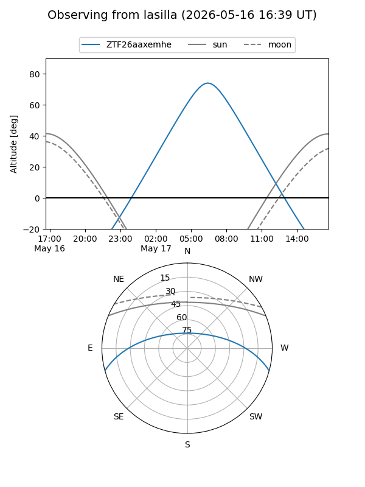
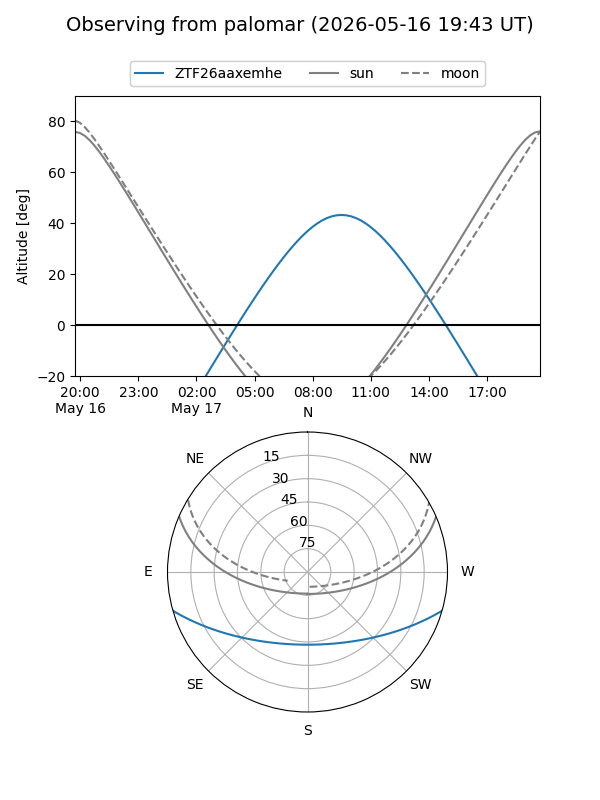

ZTF26aaxemhe
Target ZTF26aaxemhe at 2026-05-16 13:14
Aliases and brokers:
FINK: link
Lasair: link
ALeRCE: link
alt names
ZTF26aaxemhe (ztf,fink_ztf)
Coordinates:
equatorial (ra, dec) = 260.1414,-13.34987
equatorial (HMS+DMS) = 17:20:33.93,-13:20:59.52
galactic (l, b) = (10.1555,+13.24636)
Flags:
Photometry:
last ztfg=18.64
1 ztfg detections
Lightcurve
Visibility


Additional plots